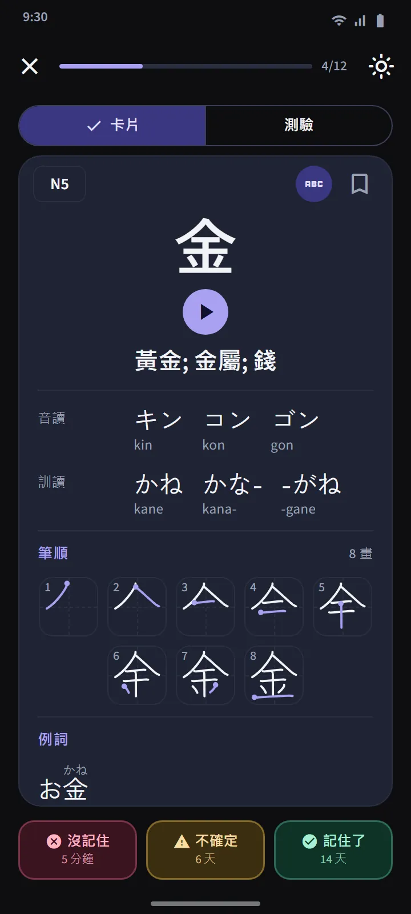
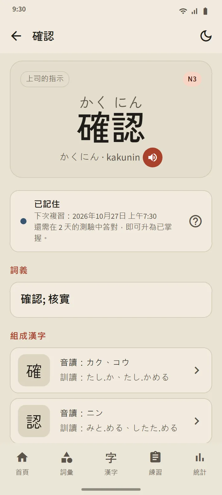
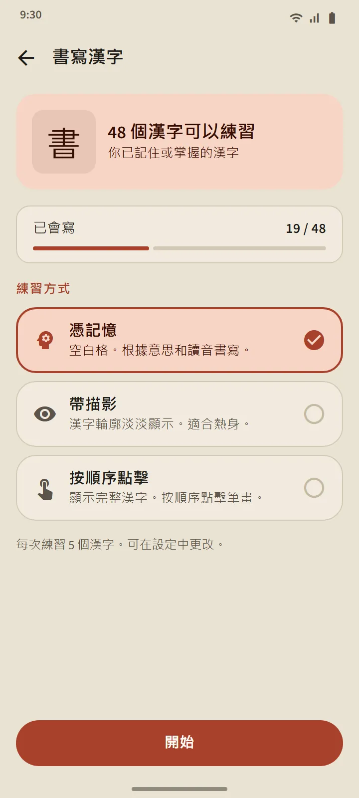

每組 25 個漢字，按日本學校的順序
「漢字」標籤頁先按 JLPT 級別劃分，再分成每組約 25 個漢字。在同一級別內，順序依照日本學校的課程（先學 1 年級），然後按筆畫數由少到多；屬於同一系列的漢字，如數字、星期名稱和季節，會保持原有順序。每一組的那一行會顯示它的漢字、進度條、已記住和已掌握的數量，以及「可以測驗」的標籤或到期的數量。
| 級別 | 漢字 | 使用權限 |
|---|---|---|
| N5 | 103 | 免費 |
| N4 | 181 | Premium |
| N3 | 370 | Premium |
| N2 | 369 | Premium |
| N1 | 1,207 | Premium |


漢字卡片和測驗
卡片正面只有漢字本身。背面有：釋義、音讀與訓讀（需要的話附羅馬字）、每一筆一個分解圖並標出起筆點的筆順圖，以及使用該漢字的例詞。與詞彙卡片相同的三個按鈕會重新安排它的複習。
一組的測驗在有 10 個漢字達到「已記住」或「已掌握」時開放，共三種題型：由漢字選釋義、由釋義選漢字、由漢字選讀音。「已掌握」的規則相同：在三個不同日子的測驗中答對。標籤頁頂部的漢字複習會彙集所有組中到期的漢字，混合測驗則跨組出題。


漢字詳情和特別卡組
每個漢字的詳情頁包含它的釋義、階段和下次複習時間、讀音、筆順圖和例詞；單詞的詳情頁則連結到它的組成漢字。與詞彙一樣，漢字也有已收藏、難記漢字和 60 秒閃練卡組，首頁「快速練習」部分的一個開關可以把其中四個方塊切換成漢字版本。


用手指書寫漢字
已處於「已記住」或「已掌握」階段的漢字可以透過書寫來練習：頁面只顯示釋義和讀音，你一筆一畫地書寫，每一筆的形狀、方向和順序都會被檢查，而且離線也能使用。共有三種模式：憑記憶、帶描影和按順序點擊。當你在兩個不同的日子都不借助提示、憑記憶寫出某個漢字後，它就算「已會寫」。


漢字入門
開始記漢字之前，介紹漢字構成規律的 11 節短課：音讀與訓讀及其使用時機、送假名、促音和連濁等音變、整詞記憶的讀音、部首以及筆順。從首頁的「日語基礎」部分打開，免費。
數據來源
釋義和讀音來自 KANJIDIC（Electronic Dictionary Research and Development Group），筆順來自 KanjiVG，兩者都採用 CC BY-SA 許可。漢字級別是根據舊版 JLPT 詞表估算的；現行的 JLPT 並不公佈官方漢字表。